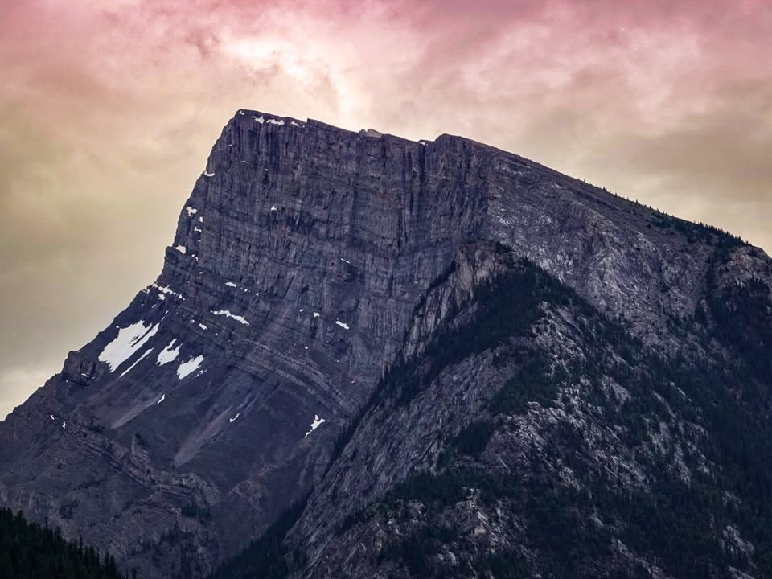
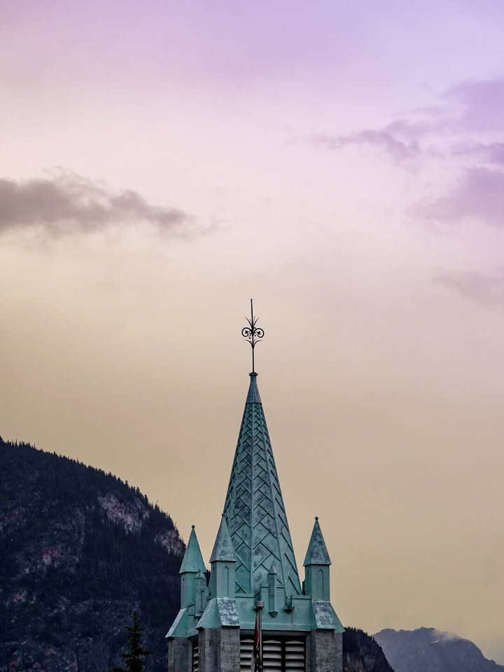
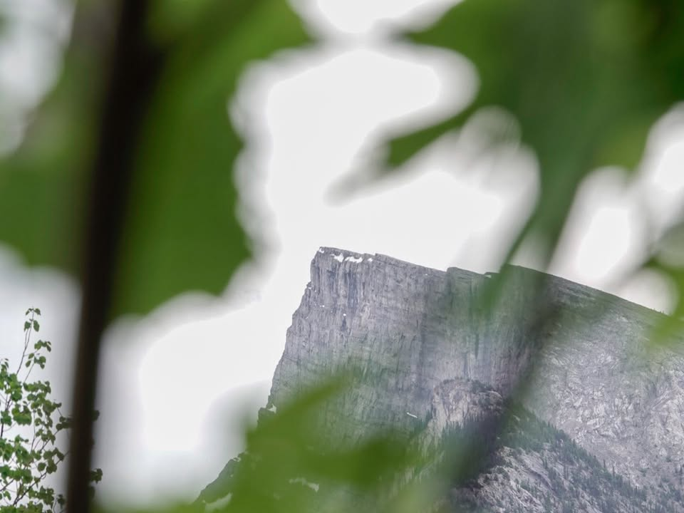
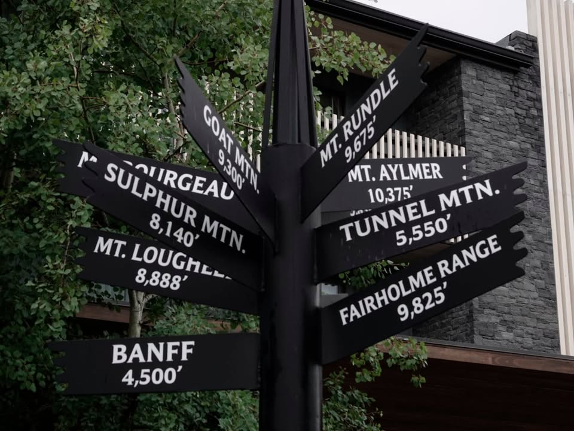
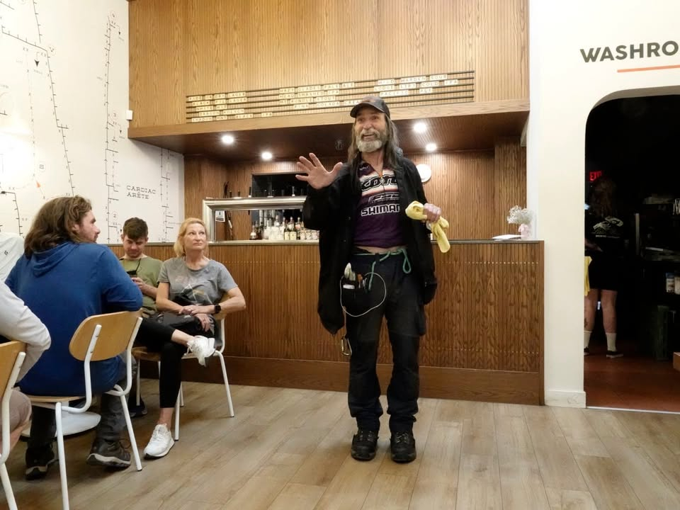
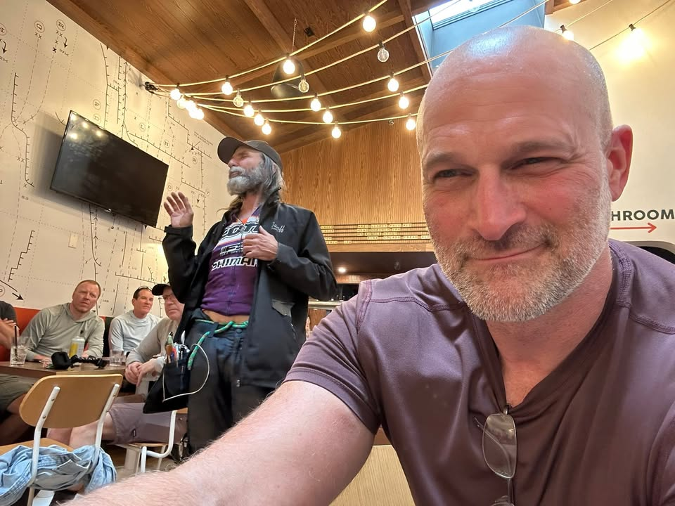
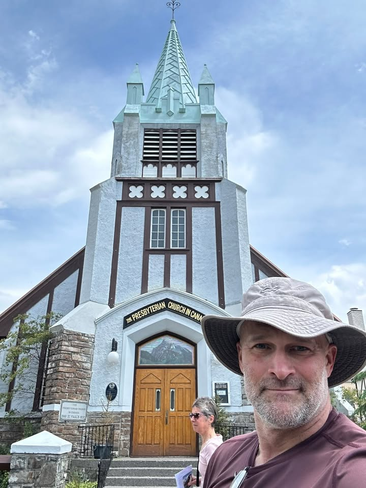

Banff Canada, a breathtaking mountain paradise. Nestled in the Canadian Rockies, this charming town is famous for stunning landscapes of majestic peaks, turquoise lakes, and lush forests. The vibrant downtown features quaint shops, delicious eateries, and rich history, making it a must-visit for adventurers and nature lovers alike.

From the Journey
My mission today was to acquire some essential supplies: bear spray, camp stove fuel, CO2 cartridges, and some snacks.
Before I headed out, I enjoyed coffee and breakfast with a German guy I met the night before. Our meal turned into a gathering of bikers, where we exchanged stories about our trips and equipment. Despite being strangers, we quickly bonded. I hope to see them down the trail, but with everyone’s varying riding abilities, there’s a good chance I won’t.

From the Journey
Completing my mission was easy, and I got everything on my list. I found out from other riders about a gathering at a brewery from 3 to 6 PM, where many Tour Divide participants would be meeting. The beer was great, and we all chatted as new friendships formed. Crazy Larry showed up, despite a mishap on the way; his pedal snapped off while biking to the location.
When he arrived, it felt like an old-time safety briefing led by a long-haired sergeant major. He offered tips on encountering bears and combating hypothermia, and when it rained, he told everyone to “suck it up” because we’d be riding in it.

From the Journey
In a private conversation, he revealed he’s selling his house to pursue his dream of breaking the Divide record in 13 days, 13 hours, and 13 minutes. He plans to ride this route twice this year and keep going until he achieves his goal.
Overall, today was filled with fun, new friends, and some time spent capturing photos around Banff. As the day went on, my excitement built, and I can’t wait to start tomorrow.

From the Journey
For those following along, my posts will be one day behind. I’ll officially start the ride on Friday the 13th (what an ominous date!). I plan to post daily, though connectivity may be spotty as I traverse the rural parts of the United States.

From the Journey

From the Journey

From the Journey

From the Journey